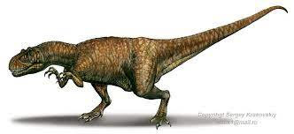

DINOSAURS
Achelousaurus
Achelousaurus facts

Pronounciation :
ah-KEL-oo-SORE-us
Diet :
Herbivore
Type of Dinosaur :
Ceratopsian
Length :
6.0 M
When it lived :
Late Cretaceous, 83-70 million years ago
Found in :
USA
Achelousaurus is a genus of centrosaurine ceratopsid dinosaur that lived during the Late Cretaceous Period of what is now North America,
about 74.2 million years ago.
Acrocanthosaurus
Acrocanthosaurus Facts
Pronounciation :
ah-kroh-kan-tho-SORE-us
Diet :
Carnivore
Type of Dinosaur :
Large Theropod
Length :
12.0 M
When it Lived :
Early Cretaceous, 115-105 million years ago
Found in :
Canada, USA
Acrocanthosaurus is a genus of carcharodontosaurid dinosaur that existed in what is now North America during the Aptian and early Albian stages
of the Early Cretaceous. Like most dinosaur genera, Acrocanthosaurus contains only a single species, A. atokensis.
Aegyptosaurus
Aegyptosaurus Facts
Pronounciation :
ee-JIP-toe-SORE-us
Diet :
Herbivore
Type of Dinosaur :
Sauropod
Length :
15.0 M
When it lived :
Late Cretaceous, 98-93 million years ago
Found in :
Egypt
Aegyptosaurus meaning 'Egypt’s lizard', for the country in which it was discovered is a genus of sauropod dinosaur believed to have lived in what
is now Africa, around 95 million years ago, during the Late Cretaceous Period. Like most sauropods, it had a long neck and a small skull.
Afrovenator
Afrovenator Facts

Pronounciation :
aff-ROW-ven-ah-tor
Diet :
Carnivore
Type of Dinosaur :
Large Theropod
Length :
9.0 M
When it lived :
Early Cretaceous, 132-121 million years ago
Found in :
Niger
Afrovenator is a genus of megalosaurid theropod dinosaur from the Middle Jurassic Period of northern Africa.
Agilisaurus
Agilisaurus Facts

Pronounciation :
aj-i-li-sore-us
Diet :
Herbivore
Type of Dinosaur :
Euornithopod
Length :
1.5 M
When it Lived :
Late Jurrasic, 169-159 million years ago
Found in :
China
Agilisaurus is a genus of ornithischian dinosaur from the Middle Jurassic Period of what is now eastern Asia.
It was about 3.5–4 ft long, 2 ft in height and 40 kg in weight.
It has leaf-shaped teeth that were well-adapted to their abrasive, plant-based diets.
Agilisaurus is known for a skull and almost complete skeleton.
Alamosaurus
Alamosaurus Facts

Pronounciation :
ah-la-mow-SORE-us
Diet :
Herbivore
Type of Dinosaur :
Sauropod
Length :
21.0 M
When it Lived :
Late Cretaceous, 70-65 Million Years ago
Found in :
USA
Alamosaurus is a genus of potentially opisthocoelicaudiine titanosaurian sauropod dinosaurs, containing a single known species,
Alamosaurus sanjuanensis, from the late Cretaceous Period of what is now southern North America.
Albertaceratops
Albertaceratops Facts
Pronounciation :
al-bert-a-serra-tops
Diet :
Herbivore
Type of Dinosaur :
Ceratopsian
Length :
7.0 M
When it Lived :
Late Cretaceous, 80-75 million years ago
Found in Canada, USA
This dinosaur is known from a single, well-preserved skull from Alberta and material from a bone bed in Montana,
including almost the entire skeleton, found in August 2001. It has long brow horns, unlike other members of the centrosaurine subfamily.
Albertosaurus
Albertosaurus Facts